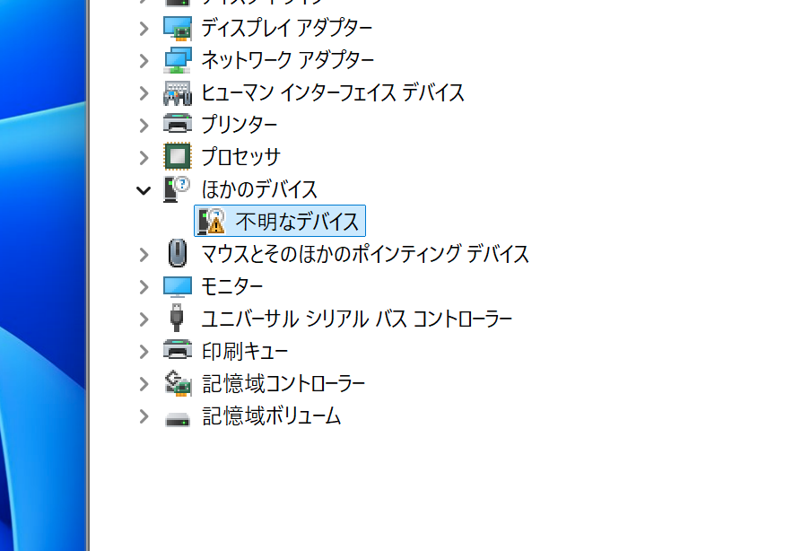
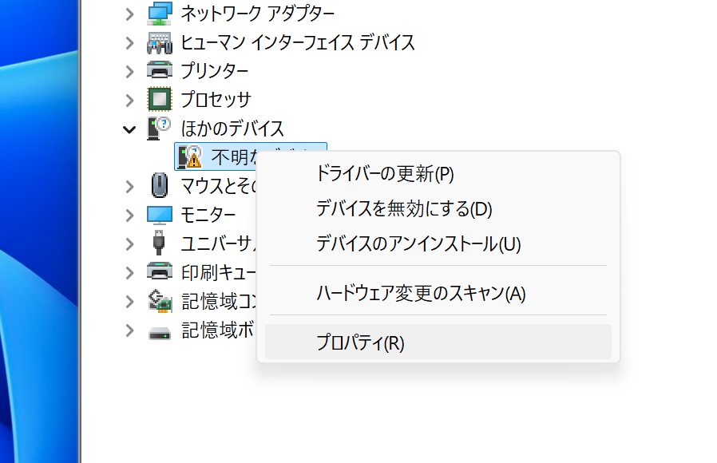
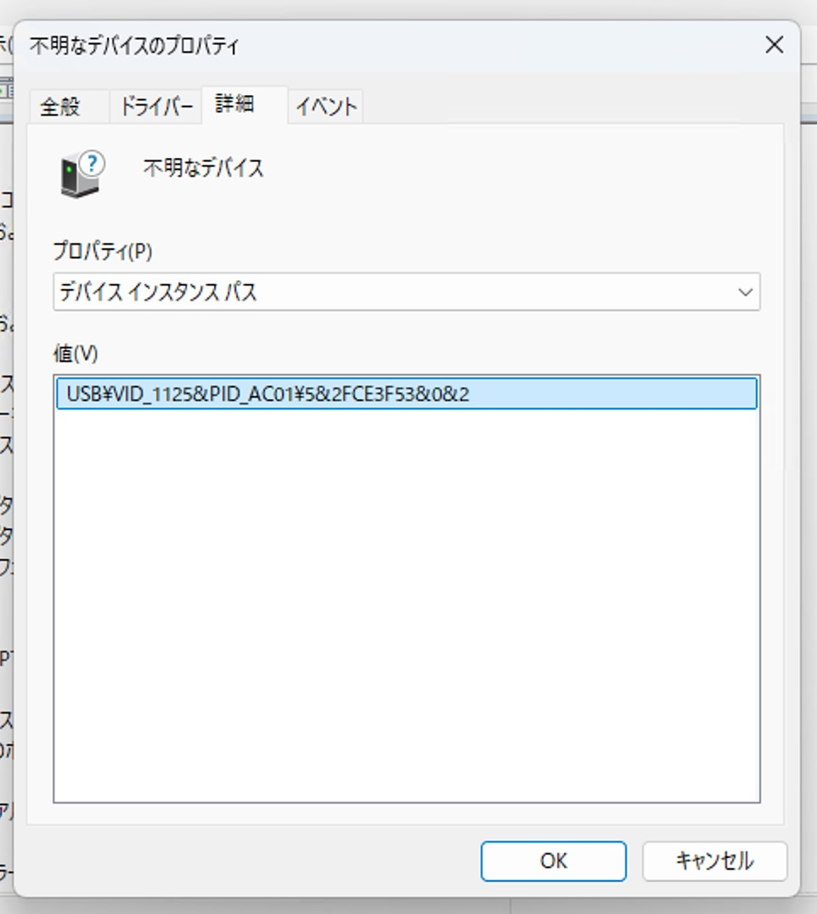
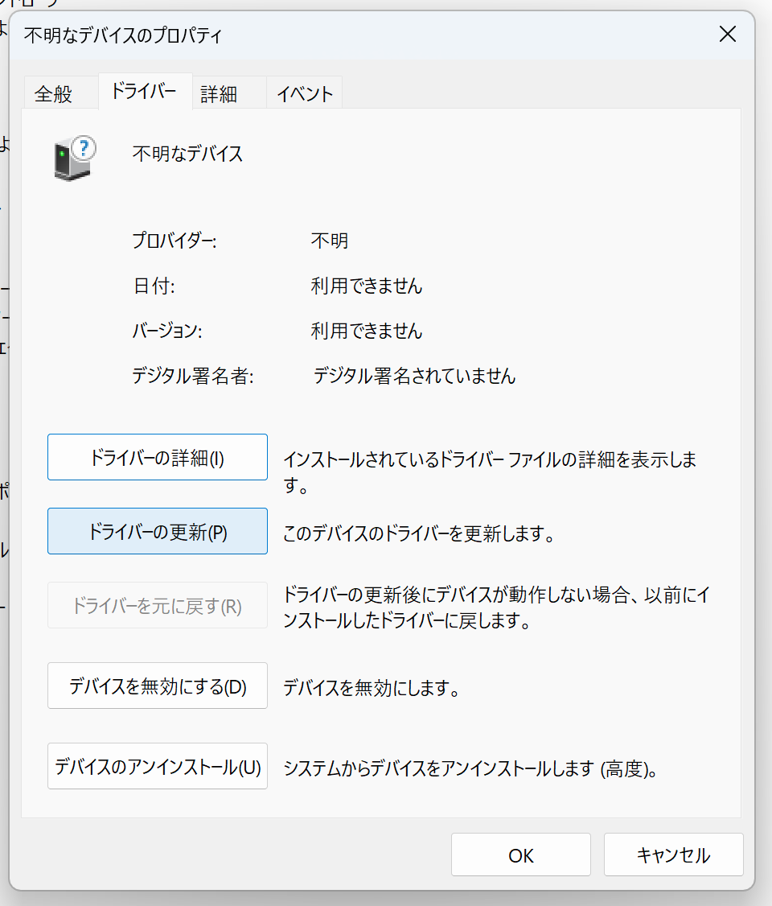
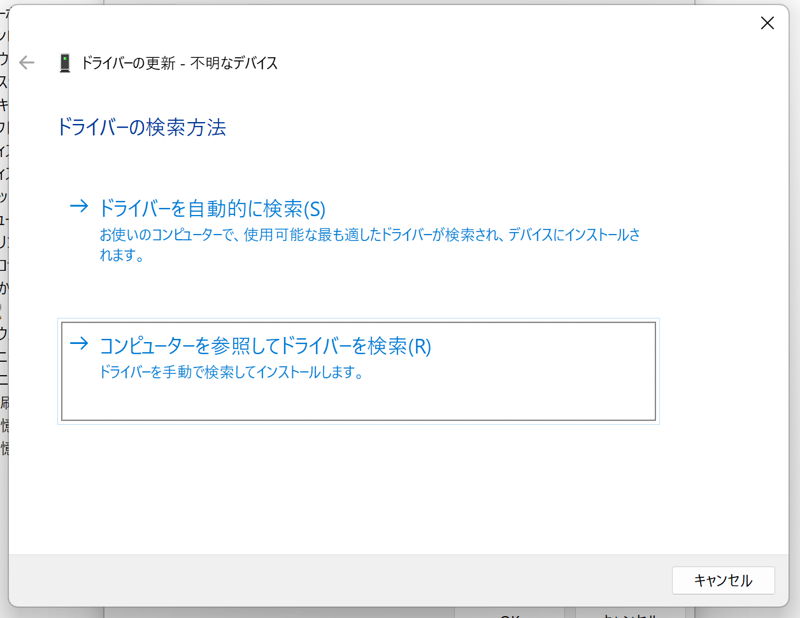
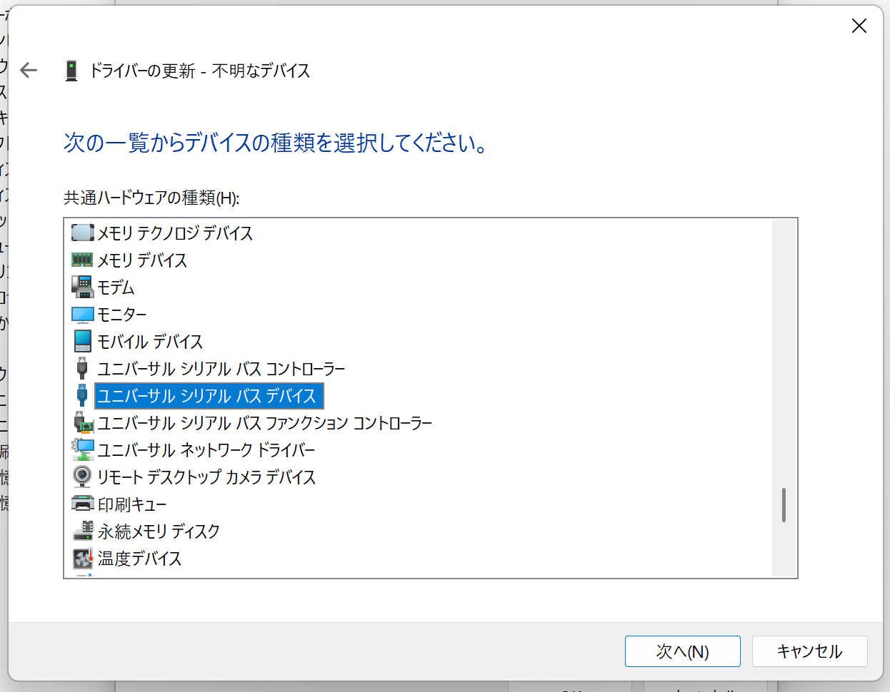
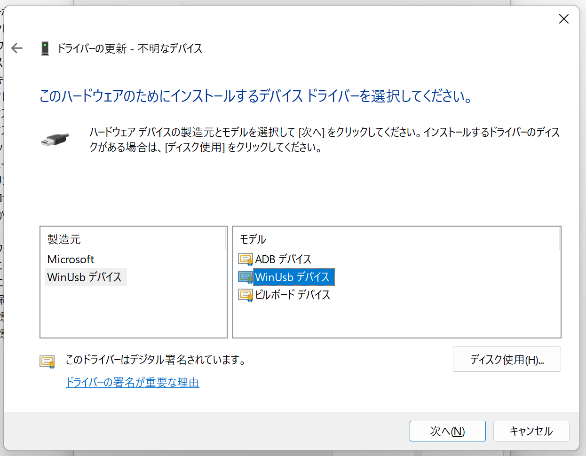
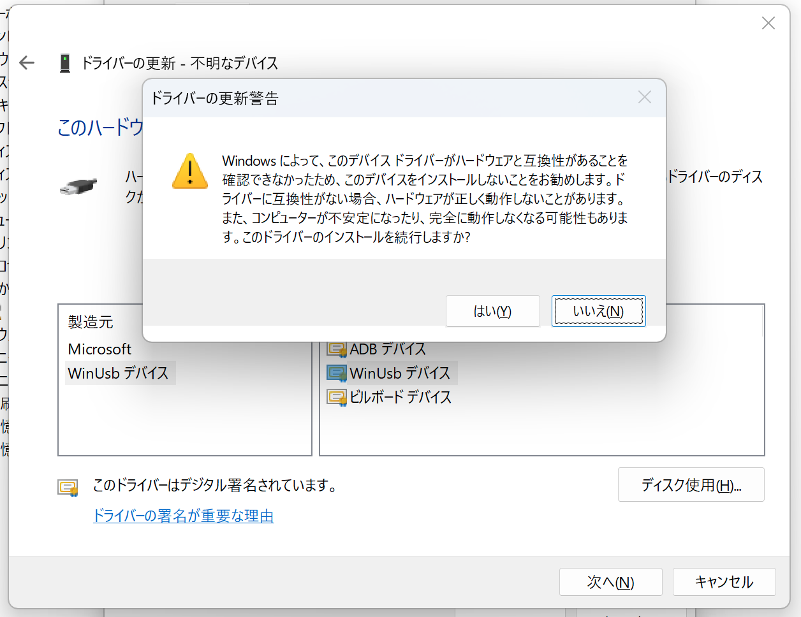
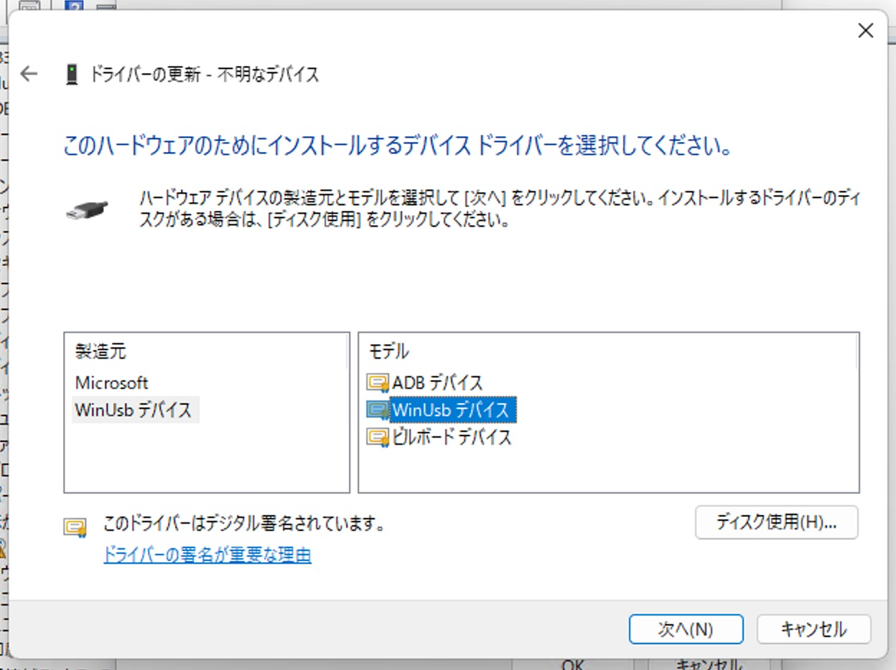
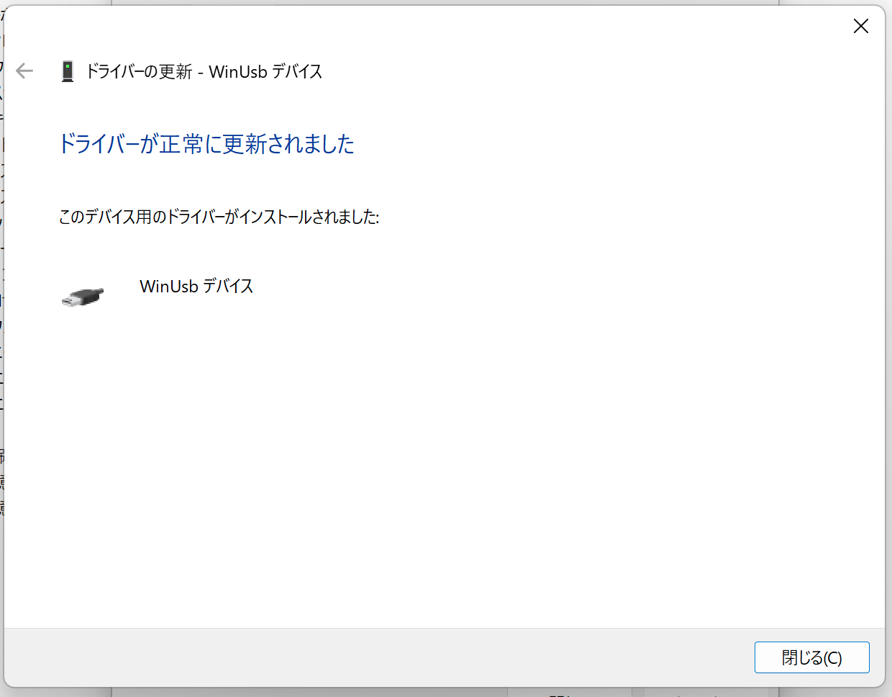

MSX Game Reader は USB のベンダクラスデバイス（クラスコード 0xFF）で、Windows 標準のクラスドライバとは関連付けられません。 公式の専用ドライバ（Jungo WinDriver 系）は 32bit Windows XP 専用で、現在の 64bit Windows 10/11 では事実上使えません。
その代わり、Microsoft 製の汎用ドライバ WinUSB.sys を割り当てれば、ブラウザの WebUSB API や libusb 系のツールから直接アクセスできるようになります。
Zadig などの外部ツールは不要で、Windows 標準のデバイスマネージャーだけで完結します。
スタートメニューから「デバイス マネージャー」を検索して起動してください。
USB ケーブルで PC に繋ぐと、デバイスマネージャーの「ほかのデバイス」の下に「不明なデバイス」として表示されます。

「不明なデバイス」を右クリックし、「プロパティ」を開きます。

「詳細」タブを開き、「プロパティ(P)」のドロップダウンで「デバイスインスタンスパス」または「ハードウェア ID」を選びます。値が USB\VID_1125&PID_AC01... で始まっていれば、これが MSX Game Reader です。

VID_1125&PID_AC01 なら正解「ドライバー」タブを開き、「ドライバーの更新」ボタンを押します。

「コンピューターを参照してドライバーを検索」を選びます。

下の方の「コンピューター上の利用可能なドライバーの一覧から選択します」を選びます。

共通ハードウェアの種類一覧を下にスクロールして「ユニバーサル シリアル バス デバイス」を選択し、「次へ」を押します。


「製造元」から「WinUsb デバイス」、「モデル」から「WinUsb デバイス」を選び、「次へ」を押します。

セキュリティ警告が出ることがありますが、「はい」を押してインストールを続行します。
インストールが完了すると、デバイスマネージャーで「ユニバーサル シリアル バス デバイス」の下に新たに「WinUsb Device」（または「不明なデバイス」が解消された状態）として表示されます。

Web Dumper を Chrome / Edge / Opera で開き、「Connect」ボタンを押してください。 デバイス選択ダイアログに「不明なデバイス (1125:AC01)」のような項目が現れれば、ドライバの割り当ては成功しています。
MSX Game Reader is a USB vendor-class device (class code 0xFF) and is not associated with any standard Windows class driver. The official vendor driver (based on Jungo WinDriver) is for 32-bit Windows XP only and is effectively unusable on current 64-bit Windows 10/11.
Instead, by binding Microsoft's generic WinUSB.sys driver, you can access the device directly from browsers via the WebUSB API or from libusb-based tools.
No external tools such as Zadig are required; everything can be done through Windows Device Manager.
Search for Device Manager from the Start menu and open it.
An Unknown device entry will appear under "Other devices" in Device Manager.
Right-click the unknown device and select Properties.
Switch to the Details tab. In the Property dropdown, choose Device instance path or Hardware Ids. If the value starts with USB\VID_1125&PID_AC01..., this is the MSX Game Reader.
VID_1125&PID_AC01 identifies the deviceSwitch to the Driver tab and click Update Driver.
Choose "Browse my computer for drivers".
Choose "Let me pick from a list of available drivers on my computer".
Scroll down the device class list and choose "Universal Serial Bus devices", then click Next.
Choose "WinUsb Device" as the Manufacturer and "WinUsb Device" as the Model, then click Next.
If a security warning appears, click Yes to proceed with the installation.
After installation, the device will appear as WinUsb Device under "Universal Serial Bus devices" in Device Manager (the previous "Unknown device" entry is resolved).
Open the Web Dumper in Chrome / Edge / Opera and click the "Connect" button. If "Unknown device (1125:AC01)" or similar appears in the device selection dialog, the driver binding is successful.